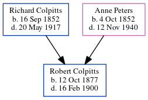

Richard Byron Colpitts 1852 - 1917
[ Home ] | [ Calendar ] | [ Surnames Index ] | [ Errors ] | [ Family History ]Richard Colpitts, the husband of Anne Atkinson Peters (the second cousin three-times-removed on the father's side of Nigel Horne), was born in New Brunswick, Canada on 16 Sept 18521,2,3,4,5,6,7 and married Anne (with whom he had 8 children: Robert Noble, Emma Alverda, Sarah Rowena Maude, Maud, Henry Jones, Ralph Watson, Carrie Eliza Ida and Clara Agnes) in New Brunswick on 21 Nov 1876.
During his life, he was living in Elgin, Albert, New Brunswick in 18611, in 18712, in 18913 and in 19014; and in Westmorland, New Brunswick, Canada in 19118.
He died on 20 May 1917 in New Brunswick7 and was buried in Pleasant Vale, Albert, New Brunswick after 20 May 19177.
Children
- Robert Noble was born on 12 Oct 1877
- Emma Alverda was born on 27 Jul 1879
- Sarah Rowena Maude was born on 27 Nov 1881
- Maud was born in 1882
- Henry Jones was born on 19 Sept 1884
- Ralph Watson was born on 25 Dec 1886
- Carrie Eliza Ida was born on 4 Aug 1892
- Clara Agnes was born on 26 Jul 1895
Citations
- 1861 Census of Canada Ancestry.com Operations Inc (Relation to Head of House: Son)
- 1871 Census of Canada Ancestry.com Operations Inc
- 1891 Census of Canada Ancestry.com Operations Inc (Marital Status: Married; Relation to Head of House: Head)
- 1901 Census of Canada Ancestry.com Operations Inc (Marital Status: Married; Relation to Head of House: Head)
- Canada Census 1871 - Findmypast
- Canada Census 1911 - Findmypast
- Canada, Find A Grave Index, 1600s-Current Ancestry.com Operations, Inc.
- 1911 Census of Canada Online publication - Provo, UT, USA: Ancestry.com Operations Inc, 2006. .Original data - Library and Archives Canada. Census of Canada, 1911. Ottawa, Ontario, Canada: Library and Archives Canada, 2007. http://www.collectionscanada.gc.ca/databases/census-19
- Canada Census 1901 - Findmypast (was the head of the household)
Media
Collpitts - headstone

Canada Census 1901 - CAN/CENSUS/1901/00422877
Canada Census 1871 - CAN/CENSUS/1871/00272841
Family Tree
Map
Generated by ged2site. Last updated on Jul 3, 2024
Known Issues
Marriage date (21 Nov 1876) has no citations
No records of living with anyone
Adding date of burial as 'aft 20 May 1917'
Census information missing between Canada Census 1871 - Findmypast and 1891 Census of Canada